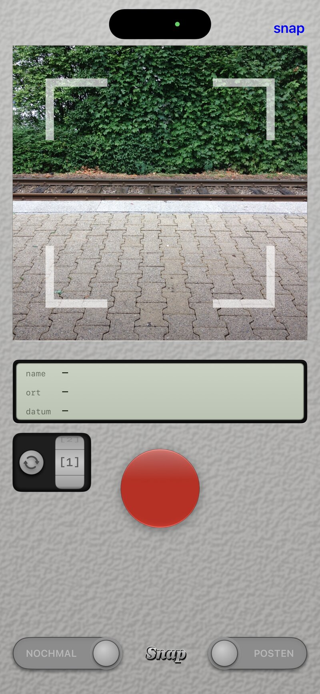
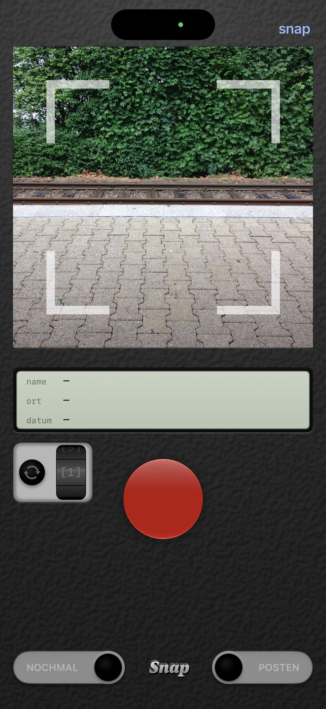

A personal camera, drawn as the back of one. One square in the viewfinder; tap the red button or say snap. A small LCD shows what the photo will carry — a name suggested by an AI (turn the drum for another), the town, the date. Slide to post.
The photo goes to the library and, with its name and place inside it, to afterworkphotos.com, where it hangs within a minute.
English and German, light and dark. Not on the App Store.